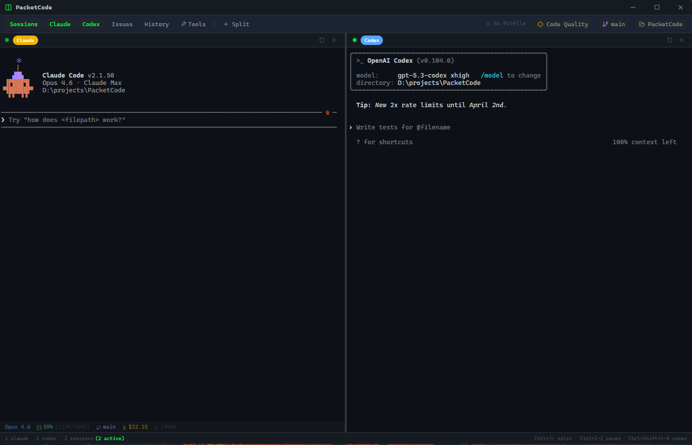

PacketADE
Your agent fleet. One flight deck.
A local-first desktop Agent Development Environment. Run coding-agent CLIs in multi-pane workspaces, hold structured conversations across seven API-key provider backends, and orchestrate larger units of work as Flights with parallel worktree attempts — on your machine or over SSH.

One native app for real agent-driven development
PacketBench combines two complementary execution styles in a single desktop window. PTY-backed CLI sessions run Claude Code, Codex CLI, OpenCode, PacketCode, or a plain shell in draggable workspace panes, driven by each CLI’s own interface. GUI/API agents in the Agents view hold durable structured conversations — streaming responses, tool calls, permission gating, plan review, and per-hunk diff acceptance — against seven API-key provider backends that all normalize into one event contract.
Above both sits the Flight Deck: define a Flight, refine its plan in a read-only agent conversation, then launch one or more local or SSH agents against isolated git worktrees and supervise every attempt from a single master-detail surface. Issues, project memory, MCP configuration, git-host integration, dictation, and budget guardrails live in the same app.
Everything stays on your machine: API keys in the OS keyring, transcripts and memory on local disk, execution local or over SSH connections you configure. There is no hosted service — API agents run on API keys you supply, and terminal panes use whatever logins the CLIs you launch already have.
What’s in the box
Multi-CLI Workspaces
Run Claude Code, Codex CLI, OpenCode, PacketCode, and plain shells side by side in persistent draggable pane mosaics, with per-CLI status lines and saved layouts that hydrate dormant — nothing launches until you open the workspace. Raw terminals choose their own shell — PowerShell 7, Windows PowerShell, Command Prompt, Git Bash, WSL, or Auto — and every pane header shows the shell it actually resolved to.
Nine-Row Agent Picker
Structured conversations with the Claude Agent SDK, Claude API, OpenAI API, OpenAI Agents SDK, MiniMax, OpenRouter, local Ollama, the PacketCode engine over ACP, and any OpenAI-compatible endpoint you point it at — each row with a live auth badge, one shared composer, one event contract. Every keyed row uses your own API key; the last three need none. No row uses a Claude.ai or ChatGPT subscription login.
Flight Deck Orchestration
Organize work as Flights: plan in a read-only agent conversation, apply structured milestones and tasks, then launch parallel worktree attempts across local and SSH agents with status, attention, and cost rollups.
SSH Remote Workspaces
Add servers with key, agent, or password auth, detect installed CLIs, and run agent sessions and worktree attempts on remote machines. Host-key pinning is enforced whenever a server’s fingerprint is saved.
Local-First MCP Hub
Manage the MCP servers PacketBench consumes and the configs it writes for Claude Code and Codex in one place, with per-conversation server toggles and trust frozen into each managed session.
Project Memory
Terminal sessions and finished Flights are recorded automatically, conventions and pitfalls are distilled into learned patterns, and durable notes live as ordinary Markdown in .agents/memory — committed with your repo, editable in your own editor. Relevant context is injected into agent sessions behind a visible toggle and preview, and Ask keyword-searches the whole corpus without an AI call. Memory is scoped per project, and a remote SSH workspace keeps its own.
Issues + GitHub & Gitea
A kanban issue board with AI-structured issue creation, send-to-session handoffs, Flight linkage, and sync against cloud GitHub and self-hosted Gitea/Forgejo — both configurable at once.
Dictation & Speaking Analytics
Local Whisper voice-to-text with OS-global push-to-talk and toggle hotkeys, focus-aware transcript insertion, a microphone doctor, and a custom dictionary. An analytics tab charts words per minute, streaks, vocabulary, speaking rhythm, and sentiment over your history. No audio leaves the machine — transcription and scoring both run locally.
Budget Guardrails
Daily, monthly, per-session, per-provider, and per-Flight spend caps, with a warning threshold and a hard stop that blocks a launch that would go over budget. Spend is measured to enforce those limits — PacketBench deliberately ships no cost dashboard and no running dollar readout.
Current status v0.12.1 source
PacketBench is in active development and dogfooded daily. Here is exactly where distribution stands today — no surprises after you download. Last updated 2026-08-29 against source v0.12.1.
v0.5.0 from May 2026, and its installers are still named PacketADE — the product was renamed afterwards. Source is at 0.12.1; Windows installers are built from it locally but have not been published, signed, or put through the packaged acceptance matrix. If you want current PacketBench today, build from source.dev/multi-platform-build.md in the repo.claude or codex CLIs keep those tools’ own subscription logins. Ollama runs fully local with no key at all.Docs & source
User Manual
Task-oriented documentation for every surface: Workspaces, Agents, Flight Deck, SSH, MCP, memory, dictation, and settings.
Read the manual →Roadmap
Where the product is headed: distribution trust (signing + updater), Flight Deck supervision, and the Remote Agents bet.
See what’s next →GitHub
Full source, releases, and issue tracker. Star the repo, file bugs, or build it yourself from the runbooks in dev/.